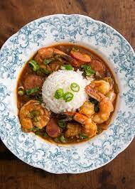

Gumbo Recipes

- Serves 4
- 3 Hours to Prepare
Gumbo, is the Cajun Dish. Almost everyone has at least heard of gumbo before but no too many folks outside of the southeast U.S. have ever tried legitimate gumbo. Probably the most culturally signifigant dish in Cajun Cuisine Gumbo represents the microcosm of diverity that New Orleans has always been. It symbolizes the melting pot of people who made the city what it is and the resilience of the ones who continue the tradition of our ancestors. Hundreds of years later Gumbo is still one of the most popular dishes in New Orleans served different ways all over Louisiana.
Almost every good cajun dish includes a roux as a thickening agent, a roux is a mixture of equal parts fat and flour, cooked on medium heat and constantly stirred to prevent burning until a desired color is reached. The color of the roux you use will vary depending on the dish but with my gumbo recipe I use a dark brown (almost black) roux.
Ingredients
- Roux
- 1 1/2 cups Holy Trinity
- 1 carton Chicken Stock
- 1 bag frozen Okra
- 2 Green Onion Sprouts
- 1 pack of Andouille Sausage
- 1/2 Whole Chicken
Seasonings
- Gumbo File
- Tony Chachere's cajun seasoning
- Cayenne Pepper
- Black Pepper
- 1 Chicken Bouillon Cube
Directions
As stated before there are many variations on gumbo and they are all right but we will be preparing a traditional gumbo with chicken and andouille sausage. Our gumbo will also contain okra which is ultimatley optional but is mandatory in my opinion. I usually bake a whole chicken and break it up and add it to my pot (bones and all).
- While the roux is being prepared you will want to take that time to chop your holy trinity, I personally like to add a clove or two of chopped garlic as well.
- About 3 minutes before the roux finishes throw all your chopped vegetables into the roux and allow them to cook until the roux finishes, this will save you the step of having to saute the vegetables.
- Brown sausage in skillet.
- Transfer vegetables from skillet into larger deep pot,add browned sausage.
- Add Roux and equal parts chicken stock and water.
- Stir and add seasonings to taste except for gumbo file
- Add chicken and chicken bones.
- Cover and bring to a boil, then reduce heat to medium and let simmer for about 2 1/2 hours.
- Add gumbo file about 15 minutes before completion (this will help to thicken gumbo).
- Let cook for an additonal 15 mins before removing from heat and adding to a bed of white rice.